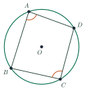
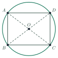
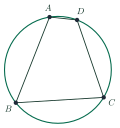
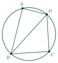
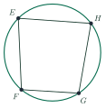
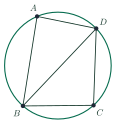
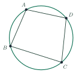
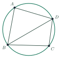

Cyclic QuadrilateralsTứ giác nội tiếp
Grade 9 · Topic: Circumcircle and IncircleLớp 9 · Chủ đề: Đường tròn ngoại tiếp và đường tròn nội tiếp
1Lesson IntroductionGiới thiệu bài học
Learning goalsMục tiêu bài học
By the end of this lesson you can:
Sau bài học này, em có thể:
recognize a cyclic quadrilateral;
nhận biết được tứ giác nội tiếp;
know that the opposite angles of a cyclic quadrilateral add up to \(180^\circ\) (and the converse);
biết trong tứ giác nội tiếp tổng hai góc đối bằng \(180^\circ\) (và điều ngược lại);
find the circumcenter and circumradius of a rectangle and a square;
xác định được tâm, bán kính đường tròn ngoại tiếp hình chữ nhật, hình vuông;
compute angles and prove that a quadrilateral is cyclic.
tính được góc và chứng minh được một tứ giác là tứ giác nội tiếp.
2Mathematical VocabularyTừ vựng Toán học
cyclic quadrilateral – a quadrilateral whose four vertices lie on a circle.
Tứ giác nội tiếp – tứ giác có bốn đỉnh cùng nằm trên một đường tròn.
opposite angles – two angles of a quadrilateral that are not next to each other (\(\widehat{A}\) and \(\widehat{C}\)).
Hai góc đối – hai góc không kề nhau của tứ giác (\(\widehat{A}\) và \(\widehat{C}\)).
supplementary angles – two angles adding up to \(180^\circ\).
Hai góc bù nhau – hai góc có tổng bằng \(180^\circ\).
circumcircle / circumradius – the circle through the four vertices; its radius.
Đường tròn ngoại tiếp tứ giác – đường tròn đi qua bốn đỉnh; bán kính của nó.
converse – the theorem with the condition and the conclusion swapped.
Định lí đảo – định lí có giả thiết và kết luận đổi chỗ cho nhau.
3Useful English PhrasesCụm từ tiếng Anh thường gặp
\(ABCD\) is a cyclic quadrilateral.
\(ABCD\) là tứ giác nội tiếp.
The opposite angles are supplementary.
Hai góc đối bù nhau.
Prove that \(ABCD\) is cyclic.
Chứng minh rằng \(ABCD\) là tứ giác nội tiếp.
Every rectangle can be inscribed in a circle.
Mọi hình chữ nhật đều nội tiếp được đường tròn.
The center is the intersection of the diagonals.
Tâm là giao điểm của hai đường chéo.
4Prerequisite ReviewÔn tập kiến thức nền
Lesson 27. An inscribed angle is half its intercepted arc; the two arcs cut off by two points add up to \(360^\circ\).
Bài 27. Số đo góc nội tiếp bằng nửa số đo cung bị chắn; hai cung có chung hai mút có tổng số đo \(360^\circ\).
Grade 8. The angles of a quadrilateral add up to \(360^\circ\).
Lớp 8. Tổng các góc của một tứ giác bằng \(360^\circ\).
5TheoryLý thuyết
5.1 Cyclic quadrilateralsTứ giác nội tiếp
DefinitionĐịnh nghĩa
A quadrilateral whose four vertices lie on a circle is called a cyclic quadrilateral (inscribed in the circle).
Tứ giác có bốn đỉnh nằm trên một đường tròn được gọi là tứ giác nội tiếp đường tròn (gọi tắt là tứ giác nội tiếp).

TheoremĐịnh lí
In a cyclic quadrilateral, the sum of two opposite angles is \(180^\circ\): \(\widehat{A}+\widehat{C}=\widehat{B}+\widehat{D}=180^\circ\).
Trong một tứ giác nội tiếp, tổng số đo hai góc đối bằng \(180^\circ\): \(\widehat{A}+\widehat{C}=\widehat{B}+\widehat{D}=180^\circ\).
Reason: \(\widehat{A}\) and \(\widehat{C}\) intercept the two arcs \(BD\), whose measures add up to \(360^\circ\); so \(\widehat{A}+\widehat{C}=\dfrac{360^\circ}{2}=180^\circ\).
Giải thích: \(\widehat{A}\) và \(\widehat{C}\) chắn hai cung \(BD\) có tổng số đo \(360^\circ\) nên \(\widehat{A}+\widehat{C}=\dfrac{360^\circ}{2}=180^\circ\).
ConverseĐịnh lí đảo
If a quadrilateral has two opposite angles adding up to \(180^\circ\), then it is cyclic.
Nếu một tứ giác có tổng số đo hai góc đối bằng \(180^\circ\) thì tứ giác đó nội tiếp được đường tròn.
5.2 Rectangles and squaresHình chữ nhật, hình vuông
CircumcircleĐường tròn ngoại tiếp
Every rectangle (and every square) is cyclic: its angles are \(90^\circ\), so opposite angles add up to \(180^\circ\).
Mọi hình chữ nhật (và hình vuông) đều nội tiếp được đường tròn: các góc bằng \(90^\circ\) nên tổng hai góc đối bằng \(180^\circ\).
The center is the intersection of the diagonals; the radius is half a diagonal: \(R=\dfrac{\sqrt{a^2+b^2}}{2}\).
Tâm là giao điểm hai đường chéo; bán kính bằng nửa đường chéo: \(R=\dfrac{\sqrt{a^2+b^2}}{2}\).
A square with side \(a\): \(R=\dfrac{a\sqrt2}{2}\).
Hình vuông cạnh \(a\): \(R=\dfrac{a\sqrt2}{2}\).

6Worked ExamplesVí dụ có lời giải
ExampleVí dụ 1RememberingNhận biết – Is it cyclic?Có nội tiếp không?
Which of these are cyclic quadrilaterals?
(a) a square;
(b) a rhombus with angles \(60^\circ\) and \(120^\circ\);
(c) a quadrilateral with \(\widehat{A}=70^\circ\), \(\widehat{C}=110^\circ\).
Tứ giác nào sau đây nội tiếp được đường tròn?
a) hình vuông;
b) hình thoi có các góc \(60^\circ\) và \(120^\circ\);
c) tứ giác có \(\widehat{A}=70^\circ\), \(\widehat{C}=110^\circ\).
Analysis: Check the sum of two opposite angles.
Phân tích: Kiểm tra tổng hai góc đối.
(a) Yes: \(90^\circ+90^\circ=180^\circ\).
(b) No: opposite angles are equal, \(60^\circ+60^\circ\ne180^\circ\).
(c) Yes: \(70^\circ+110^\circ=180^\circ\).a) Có: \(90^\circ+90^\circ=180^\circ\). b) Không: hai góc đối bằng nhau, \(60^\circ+60^\circ\ne180^\circ\). c) Có: \(70^\circ+110^\circ=180^\circ\).
(a) and (c).
a) và c).
ExampleVí dụ 2UnderstandingThông hiểu – Finding anglesTính góc
\(ABCD\) is a cyclic quadrilateral with \(\widehat{A}=105^\circ\), \(\widehat{B}=80^\circ\). Find \(\widehat{C}\) and \(\widehat{D}\).
Tứ giác nội tiếp \(ABCD\) có \(\widehat{A}=105^\circ\), \(\widehat{B}=80^\circ\). Tính \(\widehat{C}\) và \(\widehat{D}\).
Analysis: Use \(\widehat{A}+\widehat{C}=\widehat{B}+\widehat{D}=180^\circ\).
Phân tích: Dùng \(\widehat{A}+\widehat{C}=\widehat{B}+\widehat{D}=180^\circ\).
\(\widehat{C}=180^\circ-105^\circ=75^\circ\); \(\widehat{D}=180^\circ-80^\circ=100^\circ\).
\(\widehat{C}=180^\circ-105^\circ=75^\circ\); \(\widehat{D}=180^\circ-80^\circ=100^\circ\).
\(75^\circ\), \(100^\circ\).
\(75^\circ\), \(100^\circ\).
ExampleVí dụ 3Basic applicationVận dụng thấp – A rectangleHình chữ nhật
A rectangle \(ABCD\) has \(AB=8\) cm and \(BC=6\) cm. Find the center and the radius of its circumcircle, and the area of the disk.
Hình chữ nhật \(ABCD\) có \(AB=8\) cm, \(BC=6\) cm. Xác định tâm, tính bán kính đường tròn ngoại tiếp và diện tích hình tròn đó.
Analysis: The diagonal is a diameter.
Phân tích: Đường chéo là đường kính.
\(AC=\sqrt{8^2+6^2}=10\) cm; the center is the intersection \(O\) of \(AC\) and \(BD\); \(R=5\) cm.
\(AC=\sqrt{8^2+6^2}=10\) cm; tâm là giao điểm \(O\) của \(AC\) và \(BD\); \(R=5\) cm.
\(S=\pi\cdot5^2=25\pi\approx78.5\) cm².
\(S=\pi\cdot5^2=25\pi\approx78{,}5\) cm².
\(R=5\) cm; \(25\pi\) cm².
\(R=5\) cm; \(25\pi\) cm².
ExampleVí dụ 4Basic applicationVận dụng thấp – Using inscribed anglesDùng góc nội tiếp
In the cyclic quadrilateral \(ABCD\), \(\widehat{ABD}=40^\circ\), \(\widehat{ADB}=35^\circ\). Find \(\widehat{BAD}\) and \(\widehat{BCD}\).
Trong tứ giác nội tiếp \(ABCD\), \(\widehat{ABD}=40^\circ\), \(\widehat{ADB}=35^\circ\). Tính \(\widehat{BAD}\) và \(\widehat{BCD}\).
Analysis: Triangle \(ABD\) first, then opposite angles.
Phân tích: Xét tam giác \(ABD\) trước, sau đó dùng tổng hai góc đối.
\(\widehat{BAD}=180^\circ-40^\circ-35^\circ=105^\circ\).
\(\widehat{BAD}=180^\circ-40^\circ-35^\circ=105^\circ\).
\(\widehat{BCD}=180^\circ-105^\circ=75^\circ\).
\(\widehat{BCD}=180^\circ-105^\circ=75^\circ\).
\(105^\circ\), \(75^\circ\).
\(105^\circ\), \(75^\circ\).
ExampleVí dụ 5ApplicationVận dụng – Proving a quadrilateral is cyclicChứng minh tứ giác nội tiếp
Triangle \(ABC\) has the altitudes \(BE\) and \(CF\) (\(E\in AC\), \(F\in AB\)) meeting at \(H\). Prove that \(AEHF\) is a cyclic quadrilateral and find the center of its circumcircle. (In the theater-garden project, this idea helps to place four lamps on one circular path.)
Tam giác \(ABC\) có hai đường cao \(BE\) và \(CF\) (\(E\in AC\), \(F\in AB\)) cắt nhau tại \(H\). Chứng minh \(AEHF\) là tứ giác nội tiếp và xác định tâm đường tròn ngoại tiếp tứ giác đó. (Trong dự án sân khấu – vườn tròn, ý này giúp đặt bốn đèn trên cùng một lối đi hình tròn.)
Analysis: Look at the angles at \(E\) and \(F\).
Phân tích: Xét các góc tại \(E\) và \(F\).
\(\widehat{AEH}=90^\circ\), \(\widehat{AFH}=90^\circ\), so \(\widehat{AEH}+\widehat{AFH}=180^\circ\): \(AEHF\) is cyclic.
\(\widehat{AEH}=90^\circ\), \(\widehat{AFH}=90^\circ\) nên \(\widehat{AEH}+\widehat{AFH}=180^\circ\): \(AEHF\) là tứ giác nội tiếp.
\(E\) and \(F\) see \(AH\) under right angles, so \(AH\) is a diameter: the center is the midpoint of \(AH\).
\(E\), \(F\) nhìn \(AH\) dưới góc vuông nên \(AH\) là đường kính: tâm là trung điểm của \(AH\).
Cyclic; center = midpoint of \(AH\).
Nội tiếp; tâm là trung điểm \(AH\).
7PracticeBài tập luyện tập
A. Multiple ChoiceA. Trắc nghiệm nhiều lựa chọn
\(ABCD\) is a cyclic quadrilateral and \(\widehat{A}=91^\circ\). Find \(\widehat{C}\).

\(ABCD\) là tứ giác nội tiếp và \(\widehat{A}=91^\circ\). Tính \(\widehat{C}\).
Answer: a. Opposite angles of a cyclic quadrilateral add up to \(180^\circ\): \(180^\circ-91^\circ=89^\circ\).
Đáp án a. Trong tứ giác nội tiếp, tổng hai góc đối bằng \(180^\circ\): \(180^\circ-91^\circ=89^\circ\).
Which quadrilateral is NOT always cyclic?
Tứ giác nào sau đây KHÔNG phải lúc nào cũng nội tiếp được đường tròn?
Answer: a. In a rhombus that is not a square two opposite angles need not add up to \(180^\circ\).
Đáp án a. Ở hình thoi không phải hình vuông, tổng hai góc đối không nhất thiết bằng \(180^\circ\).
A rectangle has sides 12 cm and 16 cm. Find the radius of its circumcircle.
Hình chữ nhật có hai cạnh 12 cm và 16 cm. Tính bán kính đường tròn ngoại tiếp hình chữ nhật.
Answer: d. The center is the intersection of the diagonals; diagonal \(=\sqrt{12^2+16^2}=20\), \(R=10\) cm.
Đáp án d. Tâm là giao điểm hai đường chéo; đường chéo \(=\sqrt{12^2+16^2}=20\), \(R=10\) cm.
B. True or FalseB. Đúng hoặc sai
Quadrilateral \(MNPQ\) has \(\widehat{N}=71^\circ\) and \(\widehat{Q}=109^\circ\). Then \(MNPQ\) is a cyclic quadrilateral.
Tứ giác \(MNPQ\) có \(\widehat{N}=71^\circ\) và \(\widehat{Q}=109^\circ\). Khi đó \(MNPQ\) là tứ giác nội tiếp.
True. A quadrilateral with two opposite angles adding up to \(180^\circ\) is cyclic. Here \(71+109=180\).
Đúng. Tứ giác có tổng hai góc đối bằng \(180^\circ\) thì nội tiếp được. Ở đây \(71+109=180\).
A square with side 13 cm has circumradius \(\dfrac{13\sqrt2}{2}\text{ cm}\).
Hình vuông cạnh 13 cm có bán kính đường tròn ngoại tiếp là \(\dfrac{13\sqrt2}{2}\text{ cm}\).
True. Diagonal \(13\sqrt2\); \(R=\dfrac{13\sqrt2}{2}\text{ cm}\).
Đúng. Đường chéo \(13\sqrt2\); \(R=\dfrac{13\sqrt2}{2}\text{ cm}\).
C. Short AnswerC. Trả lời ngắn
\(MNPQ\) is inscribed in a circle and \(\widehat{N}=136^\circ\). Find \(\widehat{Q}\) (in degrees).
Tứ giác \(MNPQ\) nội tiếp một đường tròn và \(\widehat{N}=136^\circ\). Tính số đo \(\widehat{Q}\) (độ).
Enter a number.
Nhập một số.
Answer: 44. \(180-136=44\).
Đáp số: 44. \(180-136=44\).
A rectangular photo frame measures 20 cm by 21 cm. Find the diameter (cm) of the circle through its four corners.
Một khung ảnh hình chữ nhật có kích thước 20 cm × 21 cm. Tính đường kính (cm) của đường tròn đi qua bốn góc khung.
Enter a number.
Nhập một số.
Answer: 29. The diameter is the diagonal: \(\sqrt{20^2+21^2}=29\).
Đáp số: 29. Đường kính là đường chéo: \(\sqrt{20^2+21^2}=29\).
D1. Self-practice – RememberingD1. Tự luyện – Mức Nhận biết
Quadrilateral \(ABCD\) is called cyclic (inscribed in a circle) when…
Tứ giác \(ABCD\) được gọi là tứ giác nội tiếp đường tròn khi…
Answer: d. Definition: the four vertices lie on a circle.
Đáp án d. Định nghĩa: bốn đỉnh cùng nằm trên một đường tròn.
\(MNPQ\) is a cyclic quadrilateral. Which relation is always true?
\(MNPQ\) là tứ giác nội tiếp. Hệ thức nào luôn đúng?
Answer: d. Opposite angles are supplementary.
Đáp án d. Hai góc đối diện có tổng bằng \(180^\circ\).
Which quadrilateral \(ABCD\) (angles in this order) is cyclic?
Tứ giác \(ABCD\) nào sau đây (các góc theo thứ tự) là tứ giác nội tiếp?
Answer: a. We need \(\widehat{A}+\widehat{C}=\widehat{B}+\widehat{D}=180^\circ\).
Đáp án a. Cần có \(\widehat{A}+\widehat{C}=\widehat{B}+\widehat{D}=180^\circ\).
D2. Self-practice – UnderstandingD2. Tự luyện – Mức Thông hiểu
\(ABCD\) is a cyclic quadrilateral with \(\widehat{BAD}=120^\circ\). The side \(BC\) is extended beyond \(C\) to a point \(E\). Find \(\widehat{DCE}\).
\(ABCD\) là tứ giác nội tiếp có \(\widehat{BAD}=120^\circ\). Kéo dài cạnh \(BC\) về phía \(C\) đến điểm \(E\). Tính \(\widehat{DCE}\).
Answer: d. \(\widehat{DCE}=180^\circ-\widehat{BCD}=180^\circ-(180^\circ-120^\circ)=120^\circ\): the exterior angle equals the opposite interior angle.
Đáp án d. \(\widehat{DCE}=180^\circ-\widehat{BCD}=180^\circ-(180^\circ-120^\circ)=120^\circ\): góc ngoài bằng góc trong ở đỉnh đối diện.
Cyclic quadrilateral \(ABCD\) has \(\widehat{A}=105^\circ\) and \(\widehat{B}=103^\circ\). Find \(\widehat{C}\).
Tứ giác nội tiếp \(ABCD\) có \(\widehat{A}=105^\circ\), \(\widehat{B}=103^\circ\). Tính \(\widehat{C}\).
Answer: d. \(\widehat{C}=180^\circ-\widehat{A}=75^\circ\), \(\widehat{D}=180^\circ-\widehat{B}=77^\circ\).
Đáp án d. \(\widehat{C}=180^\circ-\widehat{A}=75^\circ\), \(\widehat{D}=180^\circ-\widehat{B}=77^\circ\).
A square is inscribed in a circle of radius 8 cm. Find its side.
Một hình vuông nội tiếp đường tròn bán kính 8 cm. Tính độ dài cạnh hình vuông.
Answer: c. Diagonal \(=2R\); side \(=\dfrac{2R}{\sqrt2}=8\sqrt2\text{ cm}\).
Đáp án c. Đường chéo \(=2R\); cạnh \(=\dfrac{2R}{\sqrt2}=8\sqrt2\text{ cm}\).
D3. Self-practice – Basic applicationD3. Tự luyện – Mức Vận dụng thấp
\(ABCD\) is an isosceles trapezoid (\(AB\parallel CD\), \(AD=BC\)) inscribed in a circle, \(\widehat{A}=75^\circ\). Find \(\widehat{C}\).
Hình thang cân \(ABCD\) (\(AB\parallel CD\), \(AD=BC\)) nội tiếp đường tròn, \(\widehat{A}=75^\circ\). Tính \(\widehat{C}\).
Answer: d. \(\widehat{A}\) and \(\widehat{C}\) are opposite angles: \(\widehat{C}=180^\circ-75^\circ=105^\circ\).
Đáp án d. \(\widehat{A}\), \(\widehat{C}\) là hai góc đối: \(\widehat{C}=180^\circ-75^\circ=105^\circ\).
In the cyclic quadrilateral \(ABCD\), \(\widehat{ABD}=50^\circ\) and \(\widehat{ADB}=50^\circ\). Find \(\widehat{BCD}\).

Trong tứ giác nội tiếp \(ABCD\), \(\widehat{ABD}=50^\circ\) và \(\widehat{ADB}=50^\circ\). Tính \(\widehat{BCD}\).
Answer: a. In triangle \(ABD\): \(\widehat{BAD}=180^\circ-50^\circ-50^\circ=80^\circ\); \(\widehat{BCD}=180^\circ-80^\circ=100^\circ\).
Đáp án a. Trong tam giác \(ABD\): \(\widehat{BAD}=180^\circ-50^\circ-50^\circ=80^\circ\); \(\widehat{BCD}=180^\circ-80^\circ=100^\circ\).
A rectangle with sides 9 cm and 12 cm is inscribed in a circle. Find the area of the disk.
Một hình chữ nhật có các cạnh 9 cm và 12 cm nội tiếp một đường tròn. Tính diện tích hình tròn đó.
Answer: b. \(R=\dfrac{15}{2}\), \(S=\dfrac{225\pi}{4}\text{ cm}^2\).
Đáp án b. \(R=\dfrac{15}{2}\), \(S=\dfrac{225\pi}{4}\text{ cm}^2\).
D4. Self-practice – Advanced applicationD4. Tự luyện – Mức Vận dụng
Quadrilateral \(ABCD\) has \(\widehat{B}=\widehat{D}=90^\circ\), \(AB=12\) cm, \(BC=16\) cm. Which statement is correct?
Tứ giác \(ABCD\) có \(\widehat{B}=\widehat{D}=90^\circ\), \(AB=12\) cm, \(BC=16\) cm. Khẳng định nào đúng?
Answer: a. \(\widehat{B}+\widehat{D}=180^\circ\): cyclic. \(B\), \(D\) see \(AC\) under right angles, so \(AC=20\) is a diameter, \(R=10\).
Đáp án a. \(\widehat{B}+\widehat{D}=180^\circ\) nên nội tiếp. \(B\), \(D\) nhìn \(AC\) dưới góc vuông nên \(AC=20\) là đường kính, \(R=10\).
Cyclic quadrilateral \(ABCD\) has \(\widehat{A}:\widehat{C}=7:5\). Find \(\widehat{A}\).
Tứ giác nội tiếp \(ABCD\) có \(\widehat{A}:\widehat{C}=7:5\). Tính \(\widehat{A}\).
Answer: a. \(\widehat{A}+\widehat{C}=180^\circ\), so \(\widehat{A}=\dfrac{7}{12}\cdot180^\circ=105^\circ\).
Đáp án a. \(\widehat{A}+\widehat{C}=180^\circ\) nên \(\widehat{A}=\dfrac{7}{12}\cdot180^\circ=105^\circ\).
A circular theater garden is designed so that a rectangular stage 7 m × 24 m has its four corners on the boundary circle. What is the area of the garden?
Một khu vườn – sân khấu hình tròn được thiết kế sao cho bốn góc của sân khấu hình chữ nhật 7 m × 24 m nằm trên đường tròn biên. Tính diện tích khu vườn.
Answer: c. The stage is inscribed: diameter = diagonal \(=25\) m, \(S=\pi\left(\dfrac{25}{2}\right)^2=\dfrac{625\pi}{4}\text{ m}^2\).
Đáp án c. Sân khấu nội tiếp đường tròn: đường kính = đường chéo \(=25\) m, \(S=\pi\left(\dfrac{25}{2}\right)^2=\dfrac{625\pi}{4}\text{ m}^2\).
A. Multiple ChoiceA. Trắc nghiệm nhiều lựa chọn
\(EFGH\) is a cyclic quadrilateral and \(\widehat{E}=123^\circ\). Find \(\widehat{G}\).

\(EFGH\) là tứ giác nội tiếp và \(\widehat{E}=123^\circ\). Tính \(\widehat{G}\).
Answer: a. Opposite angles of a cyclic quadrilateral add up to \(180^\circ\): \(180^\circ-123^\circ=57^\circ\).
Đáp án a. Trong tứ giác nội tiếp, tổng hai góc đối bằng \(180^\circ\): \(180^\circ-123^\circ=57^\circ\).
Which of these quadrilaterals can always be inscribed in a circle?
Trong các tứ giác sau, tứ giác nào luôn nội tiếp được đường tròn?
Answer: b. An isosceles trapezoid has two pairs of opposite angles adding up to \(180^\circ\).
Đáp án b. Hình thang cân có tổng hai góc đối bằng \(180^\circ\).
A rectangle has sides 9 cm and 12 cm. Find the radius of its circumcircle.
Hình chữ nhật có hai cạnh 9 cm và 12 cm. Tính bán kính đường tròn ngoại tiếp hình chữ nhật.
Answer: d. The center is the intersection of the diagonals; diagonal \(=\sqrt{9^2+12^2}=15\), \(R=7.5\) cm.
Đáp án d. Tâm là giao điểm hai đường chéo; đường chéo \(=\sqrt{9^2+12^2}=15\), \(R=7{,}5\) cm.
B. True or FalseB. Đúng hoặc sai
Quadrilateral \(EFGH\) has \(\widehat{F}=86^\circ\) and \(\widehat{H}=104^\circ\). Then \(EFGH\) is a cyclic quadrilateral.
Tứ giác \(EFGH\) có \(\widehat{F}=86^\circ\) và \(\widehat{H}=104^\circ\). Khi đó \(EFGH\) là tứ giác nội tiếp.
False. A quadrilateral with two opposite angles adding up to \(180^\circ\) is cyclic. Here \(86+104=190\).
Sai. Tứ giác có tổng hai góc đối bằng \(180^\circ\) thì nội tiếp được. Ở đây \(86+104=190\).
A square with side 10 cm has circumradius \(5\sqrt2\text{ cm}\).
Hình vuông cạnh 10 cm có bán kính đường tròn ngoại tiếp là \(5\sqrt2\text{ cm}\).
True. Diagonal \(10\sqrt2\); \(R=5\sqrt2\text{ cm}\).
Đúng. Đường chéo \(10\sqrt2\); \(R=5\sqrt2\text{ cm}\).
C. Short AnswerC. Trả lời ngắn
\(ABCD\) is inscribed in a circle and \(\widehat{B}=51^\circ\). Find \(\widehat{D}\) (in degrees).
Tứ giác \(ABCD\) nội tiếp một đường tròn và \(\widehat{B}=51^\circ\). Tính số đo \(\widehat{D}\) (độ).
Enter a number.
Nhập một số.
Answer: 129. \(180-51=129\).
Đáp số: 129. \(180-51=129\).
A rectangular photo frame measures 5 cm by 12 cm. Find the diameter (cm) of the circle through its four corners.
Một khung ảnh hình chữ nhật có kích thước 5 cm × 12 cm. Tính đường kính (cm) của đường tròn đi qua bốn góc khung.
Enter a number.
Nhập một số.
Answer: 13. The diameter is the diagonal: \(\sqrt{5^2+12^2}=13\).
Đáp số: 13. Đường kính là đường chéo: \(\sqrt{5^2+12^2}=13\).
D1. Self-practice – RememberingD1. Tự luyện – Mức Nhận biết
Quadrilateral \(MNPQ\) is called cyclic (inscribed in a circle) when…
Tứ giác \(MNPQ\) được gọi là tứ giác nội tiếp đường tròn khi…
Answer: d. Definition: the four vertices lie on a circle.
Đáp án d. Định nghĩa: bốn đỉnh cùng nằm trên một đường tròn.
\(ABCD\) is a cyclic quadrilateral. Which relation is always true?
\(ABCD\) là tứ giác nội tiếp. Hệ thức nào luôn đúng?
Answer: a. Opposite angles are supplementary.
Đáp án a. Hai góc đối diện có tổng bằng \(180^\circ\).
For which of the following quadrilaterals \(ABCD\) can we draw a circle through the four vertices?
Với tứ giác \(ABCD\) nào sau đây, ta vẽ được một đường tròn đi qua bốn đỉnh?
Answer: d. We need \(\widehat{A}+\widehat{C}=\widehat{B}+\widehat{D}=180^\circ\).
Đáp án d. Cần có \(\widehat{A}+\widehat{C}=\widehat{B}+\widehat{D}=180^\circ\).
D2. Self-practice – UnderstandingD2. Tự luyện – Mức Thông hiểu
\(ABCD\) is a cyclic quadrilateral with \(\widehat{BAD}=55^\circ\). The side \(BC\) is extended beyond \(C\) to a point \(E\). Find \(\widehat{DCE}\).
\(ABCD\) là tứ giác nội tiếp có \(\widehat{BAD}=55^\circ\). Kéo dài cạnh \(BC\) về phía \(C\) đến điểm \(E\). Tính \(\widehat{DCE}\).
Answer: a. \(\widehat{DCE}=180^\circ-\widehat{BCD}=180^\circ-(180^\circ-55^\circ)=55^\circ\): the exterior angle equals the opposite interior angle.
Đáp án a. \(\widehat{DCE}=180^\circ-\widehat{BCD}=180^\circ-(180^\circ-55^\circ)=55^\circ\): góc ngoài bằng góc trong ở đỉnh đối diện.
Cyclic quadrilateral \(ABCD\) has \(\widehat{A}=111^\circ\) and \(\widehat{B}=95^\circ\). Find \(\widehat{C}\).
Tứ giác nội tiếp \(ABCD\) có \(\widehat{A}=111^\circ\), \(\widehat{B}=95^\circ\). Tính \(\widehat{C}\).
Answer: c. \(\widehat{C}=180^\circ-\widehat{A}=69^\circ\), \(\widehat{D}=180^\circ-\widehat{B}=85^\circ\).
Đáp án c. \(\widehat{C}=180^\circ-\widehat{A}=69^\circ\), \(\widehat{D}=180^\circ-\widehat{B}=85^\circ\).
A square is inscribed in a circle of radius 11 cm. Find its area.
Một hình vuông nội tiếp đường tròn bán kính 11 cm. Tính diện tích hình vuông.
Answer: a. Side \(R\sqrt2\); area \(2R^2=242\) cm².
Đáp án a. Cạnh \(R\sqrt2\); diện tích \(2R^2=242\) cm².
D3. Self-practice – Basic applicationD3. Tự luyện – Mức Vận dụng thấp
\(ABCD\) is an isosceles trapezoid (\(AB\parallel CD\), \(AD=BC\)) inscribed in a circle, \(\widehat{A}=64^\circ\). Find \(\widehat{C}\).
Hình thang cân \(ABCD\) (\(AB\parallel CD\), \(AD=BC\)) nội tiếp đường tròn, \(\widehat{A}=64^\circ\). Tính \(\widehat{C}\).
Answer: d. \(\widehat{A}\) and \(\widehat{C}\) are opposite angles: \(\widehat{C}=180^\circ-64^\circ=116^\circ\).
Đáp án d. \(\widehat{A}\), \(\widehat{C}\) là hai góc đối: \(\widehat{C}=180^\circ-64^\circ=116^\circ\).
In the cyclic quadrilateral \(ABCD\), \(\widehat{ABD}=29^\circ\) and \(\widehat{ADB}=40^\circ\). Find \(\widehat{BCD}\).

Trong tứ giác nội tiếp \(ABCD\), \(\widehat{ABD}=29^\circ\) và \(\widehat{ADB}=40^\circ\). Tính \(\widehat{BCD}\).
Answer: b. In triangle \(ABD\): \(\widehat{BAD}=180^\circ-29^\circ-40^\circ=111^\circ\); \(\widehat{BCD}=180^\circ-111^\circ=69^\circ\).
Đáp án b. Trong tam giác \(ABD\): \(\widehat{BAD}=180^\circ-29^\circ-40^\circ=111^\circ\); \(\widehat{BCD}=180^\circ-111^\circ=69^\circ\).
A rectangle with sides 5 cm and 12 cm is inscribed in a circle. Find the circumference of the circle.
Một hình chữ nhật có các cạnh 5 cm và 12 cm nội tiếp một đường tròn. Tính độ dài đường tròn đó.
Answer: b. \(C=\pi d=13\pi\text{ cm}\).
Đáp án b. \(C=\pi d=13\pi\text{ cm}\).
D4. Self-practice – Advanced applicationD4. Tự luyện – Mức Vận dụng
Quadrilateral \(ABCD\) has \(\widehat{B}=\widehat{D}=90^\circ\), \(AB=3\) cm, \(BC=4\) cm. Which statement is correct?
Tứ giác \(ABCD\) có \(\widehat{B}=\widehat{D}=90^\circ\), \(AB=3\) cm, \(BC=4\) cm. Khẳng định nào đúng?
Answer: c. \(\widehat{B}+\widehat{D}=180^\circ\): cyclic. \(B\), \(D\) see \(AC\) under right angles, so \(AC=5\) is a diameter, \(R=2.5\).
Đáp án c. \(\widehat{B}+\widehat{D}=180^\circ\) nên nội tiếp. \(B\), \(D\) nhìn \(AC\) dưới góc vuông nên \(AC=5\) là đường kính, \(R=2{,}5\).
Cyclic quadrilateral \(ABCD\) has \(\widehat{A}:\widehat{C}=3:1\). Find \(\widehat{A}\).
Tứ giác nội tiếp \(ABCD\) có \(\widehat{A}:\widehat{C}=3:1\). Tính \(\widehat{A}\).
Answer: b. \(\widehat{A}+\widehat{C}=180^\circ\), so \(\widehat{A}=\dfrac{3}{4}\cdot180^\circ=135^\circ\).
Đáp án b. \(\widehat{A}+\widehat{C}=180^\circ\) nên \(\widehat{A}=\dfrac{3}{4}\cdot180^\circ=135^\circ\).
A circular theater garden is designed so that a rectangular stage 6 m × 8 m has its four corners on the boundary circle. What is the area of the garden?
Một khu vườn – sân khấu hình tròn được thiết kế sao cho bốn góc của sân khấu hình chữ nhật 6 m × 8 m nằm trên đường tròn biên. Tính diện tích khu vườn.
Answer: b. The stage is inscribed: diameter = diagonal \(=10\) m, \(S=\pi\left(\dfrac{10}{2}\right)^2=25\pi\text{ m}^2\).
Đáp án b. Sân khấu nội tiếp đường tròn: đường kính = đường chéo \(=10\) m, \(S=\pi\left(\dfrac{10}{2}\right)^2=25\pi\text{ m}^2\).
A. Multiple ChoiceA. Trắc nghiệm nhiều lựa chọn
\(ABCD\) is a cyclic quadrilateral and \(\widehat{A}=115^\circ\). Find \(\widehat{C}\).

\(ABCD\) là tứ giác nội tiếp và \(\widehat{A}=115^\circ\). Tính \(\widehat{C}\).
Answer: a. Opposite angles of a cyclic quadrilateral add up to \(180^\circ\): \(180^\circ-115^\circ=65^\circ\).
Đáp án a. Trong tứ giác nội tiếp, tổng hai góc đối bằng \(180^\circ\): \(180^\circ-115^\circ=65^\circ\).
Which quadrilateral is always cyclic (inscribed in a circle)?
Tứ giác nào sau đây luôn nội tiếp được một đường tròn?
Answer: d. A rectangle has two pairs of opposite angles adding up to \(180^\circ\).
Đáp án d. Hình chữ nhật có tổng hai góc đối bằng \(180^\circ\).
A rectangle has sides 5 cm and 12 cm. Find the radius of its circumcircle.
Hình chữ nhật có hai cạnh 5 cm và 12 cm. Tính bán kính đường tròn ngoại tiếp hình chữ nhật.
Answer: b. The center is the intersection of the diagonals; diagonal \(=\sqrt{5^2+12^2}=13\), \(R=6.5\) cm.
Đáp án b. Tâm là giao điểm hai đường chéo; đường chéo \(=\sqrt{5^2+12^2}=13\), \(R=6{,}5\) cm.
B. True or FalseB. Đúng hoặc sai
Quadrilateral \(ABCD\) has \(\widehat{B}=100^\circ\) and \(\widehat{D}=80^\circ\). Then \(ABCD\) is a cyclic quadrilateral.
Tứ giác \(ABCD\) có \(\widehat{B}=100^\circ\) và \(\widehat{D}=80^\circ\). Khi đó \(ABCD\) là tứ giác nội tiếp.
True. A quadrilateral with two opposite angles adding up to \(180^\circ\) is cyclic. Here \(100+80=180\).
Đúng. Tứ giác có tổng hai góc đối bằng \(180^\circ\) thì nội tiếp được. Ở đây \(100+80=180\).
A square with side 3 cm has circumradius \(\dfrac{3}{2}\text{ cm}\).
Hình vuông cạnh 3 cm có bán kính đường tròn ngoại tiếp là \(\dfrac{3}{2}\text{ cm}\).
False. Diagonal \(3\sqrt2\); \(R=\dfrac{3\sqrt2}{2}\text{ cm}\).
Sai. Đường chéo \(3\sqrt2\); \(R=\dfrac{3\sqrt2}{2}\text{ cm}\).
C. Short AnswerC. Trả lời ngắn
\(EFGH\) is inscribed in a circle and \(\widehat{F}=65^\circ\). Find \(\widehat{H}\) (in degrees).
Tứ giác \(EFGH\) nội tiếp một đường tròn và \(\widehat{F}=65^\circ\). Tính số đo \(\widehat{H}\) (độ).
Enter a number.
Nhập một số.
Answer: 115. \(180-65=115\).
Đáp số: 115. \(180-65=115\).
A rectangular photo frame measures 14 cm by 48 cm. Find the diameter (cm) of the circle through its four corners.
Một khung ảnh hình chữ nhật có kích thước 14 cm × 48 cm. Tính đường kính (cm) của đường tròn đi qua bốn góc khung.
Enter a number.
Nhập một số.
Answer: 50. The diameter is the diagonal: \(\sqrt{14^2+48^2}=50\).
Đáp số: 50. Đường kính là đường chéo: \(\sqrt{14^2+48^2}=50\).
D1. Self-practice – RememberingD1. Tự luyện – Mức Nhận biết
Quadrilateral \(EFGH\) is called cyclic (inscribed in a circle) when…
Tứ giác \(EFGH\) được gọi là tứ giác nội tiếp đường tròn khi…
Answer: d. Definition: the four vertices lie on a circle.
Đáp án d. Định nghĩa: bốn đỉnh cùng nằm trên một đường tròn.
\(EFGH\) is a cyclic quadrilateral. Which relation is always true?
\(EFGH\) là tứ giác nội tiếp. Hệ thức nào luôn đúng?
Answer: a. Opposite angles are supplementary.
Đáp án a. Hai góc đối diện có tổng bằng \(180^\circ\).
The angles of quadrilateral \(ABCD\) are given below. In which case is \(ABCD\) inscribed in a circle?
Các góc của tứ giác \(ABCD\) được cho dưới đây. Trường hợp nào \(ABCD\) nội tiếp được đường tròn?
Answer: d. We need \(\widehat{A}+\widehat{C}=\widehat{B}+\widehat{D}=180^\circ\).
Đáp án d. Cần có \(\widehat{A}+\widehat{C}=\widehat{B}+\widehat{D}=180^\circ\).
D2. Self-practice – UnderstandingD2. Tự luyện – Mức Thông hiểu
\(ABCD\) is a cyclic quadrilateral with \(\widehat{BAD}=92^\circ\). The side \(BC\) is extended beyond \(C\) to a point \(E\). Find \(\widehat{DCE}\).
\(ABCD\) là tứ giác nội tiếp có \(\widehat{BAD}=92^\circ\). Kéo dài cạnh \(BC\) về phía \(C\) đến điểm \(E\). Tính \(\widehat{DCE}\).
Answer: c. \(\widehat{DCE}=180^\circ-\widehat{BCD}=180^\circ-(180^\circ-92^\circ)=92^\circ\): the exterior angle equals the opposite interior angle.
Đáp án c. \(\widehat{DCE}=180^\circ-\widehat{BCD}=180^\circ-(180^\circ-92^\circ)=92^\circ\): góc ngoài bằng góc trong ở đỉnh đối diện.
Cyclic quadrilateral \(ABCD\) has \(\widehat{A}=96^\circ\) and \(\widehat{B}=102^\circ\). Find \(\widehat{C}\).
Tứ giác nội tiếp \(ABCD\) có \(\widehat{A}=96^\circ\), \(\widehat{B}=102^\circ\). Tính \(\widehat{C}\).
Answer: c. \(\widehat{C}=180^\circ-\widehat{A}=84^\circ\), \(\widehat{D}=180^\circ-\widehat{B}=78^\circ\).
Đáp án c. \(\widehat{C}=180^\circ-\widehat{A}=84^\circ\), \(\widehat{D}=180^\circ-\widehat{B}=78^\circ\).
A square is inscribed in a circle of radius 2 cm. Find its side.
Một hình vuông nội tiếp đường tròn bán kính 2 cm. Tính độ dài cạnh hình vuông.
Answer: d. Diagonal \(=2R\); side \(=\dfrac{2R}{\sqrt2}=2\sqrt2\text{ cm}\).
Đáp án d. Đường chéo \(=2R\); cạnh \(=\dfrac{2R}{\sqrt2}=2\sqrt2\text{ cm}\).
D3. Self-practice – Basic applicationD3. Tự luyện – Mức Vận dụng thấp
\(ABCD\) is an isosceles trapezoid (\(AB\parallel CD\), \(AD=BC\)) inscribed in a circle, \(\widehat{A}=63^\circ\). Find \(\widehat{C}\).
Hình thang cân \(ABCD\) (\(AB\parallel CD\), \(AD=BC\)) nội tiếp đường tròn, \(\widehat{A}=63^\circ\). Tính \(\widehat{C}\).
Answer: c. \(\widehat{A}\) and \(\widehat{C}\) are opposite angles: \(\widehat{C}=180^\circ-63^\circ=117^\circ\).
Đáp án c. \(\widehat{A}\), \(\widehat{C}\) là hai góc đối: \(\widehat{C}=180^\circ-63^\circ=117^\circ\).
In the cyclic quadrilateral \(ABCD\), \(\widehat{ABD}=46^\circ\) and \(\widehat{ADB}=32^\circ\). Find \(\widehat{BCD}\).

Trong tứ giác nội tiếp \(ABCD\), \(\widehat{ABD}=46^\circ\) và \(\widehat{ADB}=32^\circ\). Tính \(\widehat{BCD}\).
Answer: c. In triangle \(ABD\): \(\widehat{BAD}=180^\circ-46^\circ-32^\circ=102^\circ\); \(\widehat{BCD}=180^\circ-102^\circ=78^\circ\).
Đáp án c. Trong tam giác \(ABD\): \(\widehat{BAD}=180^\circ-46^\circ-32^\circ=102^\circ\); \(\widehat{BCD}=180^\circ-102^\circ=78^\circ\).
A rectangle with sides 3 cm and 4 cm is inscribed in a circle. Find the circumference of the circle.
Một hình chữ nhật có các cạnh 3 cm và 4 cm nội tiếp một đường tròn. Tính độ dài đường tròn đó.
Answer: a. \(C=\pi d=5\pi\text{ cm}\).
Đáp án a. \(C=\pi d=5\pi\text{ cm}\).
D4. Self-practice – Advanced applicationD4. Tự luyện – Mức Vận dụng
Quadrilateral \(ABCD\) has \(\widehat{B}=\widehat{D}=90^\circ\), \(AB=8\) cm, \(BC=15\) cm. Which statement is correct?
Tứ giác \(ABCD\) có \(\widehat{B}=\widehat{D}=90^\circ\), \(AB=8\) cm, \(BC=15\) cm. Khẳng định nào đúng?
Answer: b. \(\widehat{B}+\widehat{D}=180^\circ\): cyclic. \(B\), \(D\) see \(AC\) under right angles, so \(AC=17\) is a diameter, \(R=8.5\).
Đáp án b. \(\widehat{B}+\widehat{D}=180^\circ\) nên nội tiếp. \(B\), \(D\) nhìn \(AC\) dưới góc vuông nên \(AC=17\) là đường kính, \(R=8{,}5\).
Cyclic quadrilateral \(ABCD\) has \(\widehat{A}:\widehat{C}=4:1\). Find \(\widehat{A}\).
Tứ giác nội tiếp \(ABCD\) có \(\widehat{A}:\widehat{C}=4:1\). Tính \(\widehat{A}\).
Answer: a. \(\widehat{A}+\widehat{C}=180^\circ\), so \(\widehat{A}=\dfrac{4}{5}\cdot180^\circ=144^\circ\).
Đáp án a. \(\widehat{A}+\widehat{C}=180^\circ\) nên \(\widehat{A}=\dfrac{4}{5}\cdot180^\circ=144^\circ\).
A circular theater garden is designed so that a rectangular stage 9 m × 12 m has its four corners on the boundary circle. What is the area of the garden?
Một khu vườn – sân khấu hình tròn được thiết kế sao cho bốn góc của sân khấu hình chữ nhật 9 m × 12 m nằm trên đường tròn biên. Tính diện tích khu vườn.
Answer: b. The stage is inscribed: diameter = diagonal \(=15\) m, \(S=\pi\left(\dfrac{15}{2}\right)^2=\dfrac{225\pi}{4}\text{ m}^2\).
Đáp án b. Sân khấu nội tiếp đường tròn: đường kính = đường chéo \(=15\) m, \(S=\pi\left(\dfrac{15}{2}\right)^2=\dfrac{225\pi}{4}\text{ m}^2\).
8Common MistakesLỗi thường gặp
Adding two neighboring angles. Only OPPOSITE angles add up to \(180^\circ\).
Cộng hai góc kề nhau. Chỉ hai góc ĐỐI mới có tổng \(180^\circ\).
Thinking every parallelogram is cyclic. Only rectangles (and squares) among parallelograms are cyclic.
Nghĩ mọi hình bình hành đều nội tiếp. Trong các hình bình hành, chỉ hình chữ nhật (và hình vuông) nội tiếp được.
Taking \(R\) equal to the diagonal. \(R\) is half the diagonal.
Lấy \(R\) bằng đường chéo. \(R\) bằng nửa đường chéo.
Checking only one pair. To use the converse, one pair of opposite angles adding to \(180^\circ\) is enough; but you must show it.
Không chứng minh. Dùng định lí đảo cần chỉ ra một cặp góc đối có tổng \(180^\circ\).
9Lesson SummaryTổng kết
Cyclic quadrilateral: four vertices on one circle.
Tứ giác nội tiếp: bốn đỉnh cùng nằm trên một đường tròn.
Cyclic ⇔ a pair of opposite angles adds up to \(180^\circ\).
Tứ giác nội tiếp ⇔ có một cặp góc đối có tổng \(180^\circ\).
Rectangle: center = intersection of the diagonals, \(R=\dfrac{\text{diagonal}}{2}\); square: \(R=\dfrac{a\sqrt2}{2}\).
Hình chữ nhật: tâm là giao điểm hai đường chéo, \(R=\dfrac{\text{đường chéo}}{2}\); hình vuông: \(R=\dfrac{a\sqrt2}{2}\).
Key English: cyclic quadrilateral, opposite angles, supplementary angles, circumcircle, converse.
Thuật ngữ cần nhớ (chạm vào để xem tiếng Anh): tứ giác nội tiếp, hai góc đối, hai góc bù nhau, đường tròn ngoại tiếp.